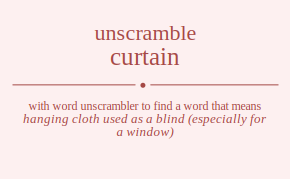

The word found after unscrambling curtain means that hanging cloth used as a blind (especially for a window), any barrier to communication or vision, provide with drapery, .

The word found after unscrambling curtain means that hanging cloth used as a blind (especially for a window), any barrier to communication or vision, provide with drapery, .
You can also find solutions for different combinations of letters in curtain like curtain curtani curtian curtina curtnai curtnia curatin curatni curaitn curaint curanti curanit curitan curitna curiatn curiant curinta curinat curntai curntia curnati curnait curnita curniat cutrain cutrani cutrian cutrina cutrnai cutrnia cutarin cutarni cutairn cutainr cutanri cutanir cutiran cutirna cutiarn cutianr cutinra cutinar cutnrai cutnria cutnari cutnair cutnira cutniar cuartin cuartni cuaritn cuarint cuarnti cuarnit cuatrin cuatrni cuatirn cuatinr cuatnri cuatnir cuairtn cuairnt cuaitrn cuaitnr cuainrt cuaintr cuanrti cuanrit cuantri cuantir cuanirt cuanitr cuirtan cuirtna cuiratn cuirant cuirnta cuirnat cuitran cuitrna cuitarn cuitanr cuitnra cuitnar cuiartn cuiarnt cuiatrn cuiatnr cuianrt cuiantr cuinrta cuinrat cuintra cuintar cuinart cuinatr cunrtai cunrtia cunrati cunrait cunrita cunriat cuntrai cuntria cuntari cuntair cuntira cuntiar cunarti cunarit cunatri cunatir cunairt cunaitr cunirta cunirat cunitra cunitar cuniart cuniatr crutain crutani crutian crutina crutnai crutnia cruatin cruatni cruaitn cruaint cruanti cruanit cruitan cruitna cruiatn cruiant cruinta cruinat cruntai cruntia crunati crunait crunita cruniat crtuain crtuani crtuian crtuina crtunai crtunia crtauin crtauni crtaiun crtainu crtanui crtaniu crtiuan crtiuna crtiaun crtianu crtinua crtinau crtnuai crtnuia crtnaui crtnaiu crtniua crtniau crautin crautni crauitn crauint craunti craunit cratuin cratuni cratiun cratinu cratnui cratniu craiutn craiunt craitun craitnu crainut craintu cranuti cranuit crantui crantiu craniut cranitu criutan criutna criuatn criuant criunta criunat crituan crituna critaun critanu critnua critnau criautn criaunt criatun criatnu crianut criantu crinuta crinuat crintua crintau crinaut crinatu crnutai crnutia crnuati crnuait crnuita crnuiat crntuai crntuia crntaui crntaiu crntiua crntiau crnauti crnauit crnatui crnatiu crnaiut crnaitu crniuta crniuat crnitua crnitau crniaut crniatu cturain cturani cturian cturina cturnai cturnia ctuarin ctuarni ctuairn ctuainr ctuanri ctuanir ctuiran ctuirna ctuiarn ctuianr ctuinra ctuinar ctunrai ctunria ctunari ctunair ctunira ctuniar ctruain ctruani ctruian ctruina ctrunai ctrunia ctrauin ctrauni ctraiun ctrainu ctranui ctraniu ctriuan ctriuna ctriaun ctrianu ctrinua ctrinau ctrnuai ctrnuia ctrnaui ctrnaiu ctrniua ctrniau ctaurin ctaurni ctauirn ctauinr ctaunri ctaunir ctaruin ctaruni ctariun ctarinu ctarnui ctarniu ctaiurn ctaiunr ctairun ctairnu ctainur ctainru ctanuri ctanuir ctanrui ctanriu ctaniur ctaniru ctiuran ctiurna ctiuarn ctiuanr ctiunra ctiunar ctiruan ctiruna ctiraun ctiranu ctirnua ctirnau ctiaurn ctiaunr ctiarun ctiarnu ctianur ctianru ctinura ctinuar ctinrua ctinrau ctinaur ctinaru ctnurai ctnuria ctnuari ctnuair ctnuira ctnuiar ctnruai ctnruia ctnraui ctnraiu ctnriua ctnriau ctnauri ctnauir ctnarui ctnariu ctnaiur ctnairu ctniura ctniuar ctnirua ctnirau ctniaur ctniaru caurtin caurtni cauritn caurint caurnti caurnit cautrin cautrni cautirn cautinr cautnri cautnir cauirtn cauirnt cauitrn cauitnr cauinrt cauintr caunrti caunrit cauntri cauntir caunirt caunitr carutin carutni caruitn caruint carunti carunit cartuin cartuni cartiun cartinu cartnui cartniu cariutn cariunt caritun caritnu carinut carintu carnuti carnuit carntui carntiu carniut carnitu caturin caturni catuirn catuinr catunri catunir catruin catruni catriun catrinu catrnui catrniu catiurn catiunr catirun catirnu catinur catinru catnuri catnuir catnrui catnriu catniur catniru caiurtn caiurnt caiutrn caiutnr caiunrt caiuntr cairutn cairunt cairtun cairtnu cairnut cairntu caiturn caitunr caitrun caitrnu caitnur caitnru cainurt cainutr cainrut cainrtu caintur caintru canurti canurit canutri canutir canuirt canuitr canruti canruit canrtui canrtiu canriut canritu canturi cantuir cantrui cantriu cantiur cantiru caniurt caniutr canirut canirtu canitur canitru ciurtan ciurtna ciuratn ciurant ciurnta ciurnat ciutran ciutrna ciutarn ciutanr ciutnra ciutnar ciuartn ciuarnt ciuatrn ciuatnr ciuanrt ciuantr ciunrta ciunrat ciuntra ciuntar ciunart ciunatr cirutan cirutna ciruatn ciruant cirunta cirunat cirtuan cirtuna cirtaun cirtanu cirtnua cirtnau cirautn ciraunt ciratun ciratnu ciranut cirantu cirnuta cirnuat cirntua cirntau cirnaut cirnatu cituran citurna cituarn cituanr citunra citunar citruan citruna citraun citranu citrnua citrnau citaurn citaunr citarun citarnu citanur citanru citnura citnuar citnrua citnrau citnaur citnaru ciaurtn ciaurnt ciautrn ciautnr ciaunrt ciauntr ciarutn ciarunt ciartun ciartnu ciarnut ciarntu ciaturn ciatunr ciatrun ciatrnu ciatnur ciatnru cianurt cianutr cianrut cianrtu ciantur ciantru cinurta cinurat cinutra cinutar cinuart cinuatr cinruta cinruat cinrtua cinrtau cinraut cinratu cintura cintuar cintrua cintrau cintaur cintaru cinaurt cinautr cinarut cinartu cinatur cinatru cnurtai cnurtia cnurati cnurait cnurita cnuriat cnutrai cnutria cnutari cnutair cnutira cnutiar cnuarti cnuarit cnuatri cnuatir cnuairt cnuaitr cnuirta cnuirat cnuitra cnuitar cnuiart cnuiatr cnrutai cnrutia cnruati cnruait cnruita cnruiat cnrtuai cnrtuia cnrtaui cnrtaiu cnrtiua cnrtiau cnrauti cnrauit cnratui cnratiu cnraiut cnraitu cnriuta cnriuat cnritua cnritau cnriaut cnriatu cnturai cnturia cntuari cntuair cntuira cntuiar cntruai cntruia cntraui cntraiu cntriua cntriau cntauri cntauir cntarui cntariu cntaiur cntairu cntiura cntiuar cntirua cntirau cntiaur cntiaru cnaurti cnaurit cnautri cnautir cnauirt cnauitr cnaruti cnaruit cnartui cnartiu cnariut cnaritu cnaturi cnatuir cnatrui cnatriu cnatiur cnatiru cnaiurt cnaiutr cnairut cnairtu cnaitur cnaitru cniurta cniurat cniutra cniutar cniuart cniuatr cniruta cniruat cnirtua cnirtau cniraut cniratu cnitura cnituar cnitrua cnitrau cnitaur cnitaru cniaurt cniautr cniarut cniartu cniatur cniatru ucrtain ucrtani ucrtian ucrtina ucrtnai ucrtnia ucratin ucratni ucraitn ucraint ucranti ucranit ucritan ucritna ucriatn ucriant ucrinta ucrinat ucrntai ucrntia ucrnati ucrnait ucrnita ucrniat uctrain uctrani uctrian uctrina uctrnai uctrnia uctarin uctarni uctairn uctainr uctanri uctanir uctiran uctirna uctiarn uctianr uctinra uctinar uctnrai uctnria uctnari uctnair uctnira uctniar ucartin ucartni ucaritn ucarint ucarnti ucarnit ucatrin ucatrni ucatirn ucatinr ucatnri ucatnir ucairtn ucairnt ucaitrn ucaitnr ucainrt ucaintr ucanrti ucanrit ucantri ucantir ucanirt ucanitr ucirtan ucirtna uciratn ucirant ucirnta ucirnat ucitran ucitrna ucitarn ucitanr ucitnra ucitnar uciartn uciarnt uciatrn uciatnr ucianrt uciantr ucinrta ucinrat ucintra ucintar ucinart ucinatr ucnrtai ucnrtia ucnrati ucnrait ucnrita ucnriat ucntrai ucntria ucntari ucntair ucntira ucntiar ucnarti ucnarit ucnatri ucnatir ucnairt ucnaitr ucnirta ucnirat ucnitra ucnitar ucniart ucniatr urctain urctani urctian urctina urctnai urctnia urcatin urcatni urcaitn urcaint urcanti urcanit urcitan urcitna urciatn urciant urcinta urcinat urcntai urcntia urcnati urcnait urcnita urcniat urtcain urtcani urtcian urtcina urtcnai urtcnia urtacin urtacni urtaicn urtainc urtanci urtanic urtican urticna urtiacn urtianc urtinca urtinac urtncai urtncia urtnaci urtnaic urtnica urtniac uractin uractni uracitn uracint uracnti uracnit uratcin uratcni uraticn uratinc uratnci uratnic uraictn uraicnt uraitcn uraitnc urainct uraintc urancti urancit urantci urantic uranict uranitc urictan urictna uricatn uricant uricnta uricnat uritcan uritcna uritacn uritanc uritnca uritnac uriactn uriacnt uriatcn uriatnc urianct uriantc urincta urincat urintca urintac urinact urinatc urnctai urnctia urncati urncait urncita urnciat urntcai urntcia urntaci urntaic urntica urntiac urnacti urnacit urnatci urnatic urnaict urnaitc urnicta urnicat urnitca urnitac urniact urniatc utcrain utcrani utcrian utcrina utcrnai utcrnia utcarin utcarni utcairn utcainr utcanri utcanir utciran utcirna utciarn utcianr utcinra utcinar utcnrai utcnria utcnari utcnair utcnira utcniar utrcain utrcani utrcian utrcina utrcnai utrcnia utracin utracni utraicn utrainc utranci utranic utrican utricna utriacn utrianc utrinca utrinac utrncai utrncia utrnaci utrnaic utrnica utrniac utacrin utacrni utacirn utacinr utacnri utacnir utarcin utarcni utaricn utarinc utarnci utarnic utaicrn utaicnr utaircn utairnc utaincr utainrc utancri utancir utanrci utanric utanicr utanirc uticran uticrna uticarn uticanr uticnra uticnar utircan utircna utiracn utiranc utirnca utirnac utiacrn utiacnr utiarcn utiarnc utiancr utianrc utincra utincar utinrca utinrac utinacr utinarc utncrai utncria utncari utncair utncira utnciar utnrcai utnrcia utnraci utnraic utnrica utnriac utnacri utnacir utnarci utnaric utnaicr utnairc utnicra utnicar utnirca utnirac utniacr utniarc uacrtin uacrtni uacritn uacrint uacrnti uacrnit uactrin uactrni uactirn uactinr uactnri uactnir uacirtn uacirnt uacitrn uacitnr uacinrt uacintr uacnrti uacnrit uacntri uacntir uacnirt uacnitr uarctin uarctni uarcitn uarcint uarcnti uarcnit uartcin uartcni uarticn uartinc uartnci uartnic uarictn uaricnt uaritcn uaritnc uarinct uarintc uarncti uarncit uarntci uarntic uarnict uarnitc uatcrin uatcrni uatcirn uatcinr uatcnri uatcnir uatrcin uatrcni uatricn uatrinc uatrnci uatrnic uaticrn uaticnr uatircn uatirnc uatincr uatinrc uatncri uatncir uatnrci uatnric uatnicr uatnirc uaicrtn uaicrnt uaictrn uaictnr uaicnrt uaicntr uairctn uaircnt uairtcn uairtnc uairnct uairntc uaitcrn uaitcnr uaitrcn uaitrnc uaitncr uaitnrc uaincrt uainctr uainrct uainrtc uaintcr uaintrc uancrti uancrit uanctri uanctir uancirt uancitr uanrcti uanrcit uanrtci uanrtic uanrict uanritc uantcri uantcir uantrci uantric uanticr uantirc uanicrt uanictr uanirct uanirtc uanitcr uanitrc uicrtan uicrtna uicratn uicrant uicrnta uicrnat uictran uictrna uictarn uictanr uictnra uictnar uicartn uicarnt uicatrn uicatnr uicanrt uicantr uicnrta uicnrat uicntra uicntar uicnart uicnatr uirctan uirctna uircatn uircant uircnta uircnat uirtcan uirtcna uirtacn uirtanc uirtnca uirtnac uiractn uiracnt uiratcn uiratnc uiranct uirantc uirncta uirncat uirntca uirntac uirnact uirnatc uitcran uitcrna uitcarn uitcanr uitcnra uitcnar uitrcan uitrcna uitracn uitranc uitrnca uitrnac uitacrn uitacnr uitarcn uitarnc uitancr uitanrc uitncra uitncar uitnrca uitnrac uitnacr uitnarc uiacrtn uiacrnt uiactrn uiactnr uiacnrt uiacntr uiarctn uiarcnt uiartcn uiartnc uiarnct uiarntc uiatcrn uiatcnr uiatrcn uiatrnc uiatncr uiatnrc uiancrt uianctr uianrct uianrtc uiantcr uiantrc uincrta uincrat uinctra uinctar uincart uincatr uinrcta uinrcat uinrtca uinrtac uinract uinratc uintcra uintcar uintrca uintrac uintacr uintarc uinacrt uinactr uinarct uinartc uinatcr uinatrc uncrtai uncrtia uncrati uncrait uncrita uncriat unctrai unctria unctari unctair unctira unctiar uncarti uncarit uncatri uncatir uncairt uncaitr uncirta uncirat uncitra uncitar unciart unciatr unrctai unrctia unrcati unrcait unrcita unrciat unrtcai unrtcia unrtaci unrtaic unrtica unrtiac unracti unracit unratci unratic unraict unraitc unricta unricat unritca unritac unriact unriatc untcrai untcria untcari untcair untcira untciar untrcai untrcia untraci untraic untrica untriac untacri untacir untarci untaric untaicr untairc unticra unticar untirca untirac untiacr untiarc unacrti unacrit unactri unactir unacirt unacitr unarcti unarcit unartci unartic unarict unaritc unatcri unatcir unatrci unatric unaticr unatirc unaicrt unaictr unairct unairtc unaitcr unaitrc unicrta unicrat unictra unictar unicart unicatr unircta unircat unirtca unirtac uniract uniratc unitcra unitcar unitrca unitrac unitacr unitarc uniacrt uniactr uniarct uniartc uniatcr uniatrc rcutain rcutani rcutian rcutina rcutnai rcutnia rcuatin rcuatni rcuaitn rcuaint rcuanti rcuanit rcuitan rcuitna rcuiatn rcuiant rcuinta rcuinat rcuntai rcuntia rcunati rcunait rcunita rcuniat rctuain rctuani rctuian rctuina rctunai rctunia rctauin rctauni rctaiun rctainu rctanui rctaniu rctiuan rctiuna rctiaun rctianu rctinua rctinau rctnuai rctnuia rctnaui rctnaiu rctniua rctniau rcautin rcautni rcauitn rcauint rcaunti rcaunit rcatuin rcatuni rcatiun rcatinu rcatnui rcatniu rcaiutn rcaiunt rcaitun rcaitnu rcainut rcaintu rcanuti rcanuit rcantui rcantiu rcaniut rcanitu rciutan rciutna rciuatn rciuant rciunta rciunat rcituan rcituna rcitaun rcitanu rcitnua rcitnau rciautn rciaunt rciatun rciatnu rcianut rciantu rcinuta rcinuat rcintua rcintau rcinaut rcinatu rcnutai rcnutia rcnuati rcnuait rcnuita rcnuiat rcntuai rcntuia rcntaui rcntaiu rcntiua rcntiau rcnauti rcnauit rcnatui rcnatiu rcnaiut rcnaitu rcniuta rcniuat rcnitua rcnitau rcniaut rcniatu ructain ructani ructian ructina ructnai ructnia rucatin rucatni rucaitn rucaint rucanti rucanit rucitan rucitna ruciatn ruciant rucinta rucinat rucntai rucntia rucnati rucnait rucnita rucniat rutcain rutcani rutcian rutcina rutcnai rutcnia rutacin rutacni rutaicn rutainc rutanci rutanic rutican ruticna rutiacn rutianc rutinca rutinac rutncai rutncia rutnaci rutnaic rutnica rutniac ruactin ruactni ruacitn ruacint ruacnti ruacnit ruatcin ruatcni ruaticn ruatinc ruatnci ruatnic ruaictn ruaicnt ruaitcn ruaitnc ruainct ruaintc ruancti ruancit ruantci ruantic ruanict ruanitc ruictan ruictna ruicatn ruicant ruicnta ruicnat ruitcan ruitcna ruitacn ruitanc ruitnca ruitnac ruiactn ruiacnt ruiatcn ruiatnc ruianct ruiantc ruincta ruincat ruintca ruintac ruinact ruinatc runctai runctia runcati runcait runcita runciat runtcai runtcia runtaci runtaic runtica runtiac runacti runacit runatci runatic runaict runaitc runicta runicat runitca runitac runiact runiatc rtcuain rtcuani rtcuian rtcuina rtcunai rtcunia rtcauin rtcauni rtcaiun rtcainu rtcanui rtcaniu rtciuan rtciuna rtciaun rtcianu rtcinua rtcinau rtcnuai rtcnuia rtcnaui rtcnaiu rtcniua rtcniau rtucain rtucani rtucian rtucina rtucnai rtucnia rtuacin rtuacni rtuaicn rtuainc rtuanci rtuanic rtuican rtuicna rtuiacn rtuianc rtuinca rtuinac rtuncai rtuncia rtunaci rtunaic rtunica rtuniac rtacuin rtacuni rtaciun rtacinu rtacnui rtacniu rtaucin rtaucni rtauicn rtauinc rtaunci rtaunic rtaicun rtaicnu rtaiucn rtaiunc rtaincu rtainuc rtancui rtanciu rtanuci rtanuic rtanicu rtaniuc rticuan rticuna rticaun rticanu rticnua rticnau rtiucan rtiucna rtiuacn rtiuanc rtiunca rtiunac rtiacun rtiacnu rtiaucn rtiaunc rtiancu rtianuc rtincua rtincau rtinuca rtinuac rtinacu rtinauc rtncuai rtncuia rtncaui rtncaiu rtnciua rtnciau rtnucai rtnucia rtnuaci rtnuaic rtnuica rtnuiac rtnacui rtnaciu rtnauci rtnauic rtnaicu rtnaiuc rtnicua rtnicau rtniuca rtniuac rtniacu rtniauc racutin racutni racuitn racuint racunti racunit ractuin ractuni ractiun ractinu ractnui ractniu raciutn raciunt racitun racitnu racinut racintu racnuti racnuit racntui racntiu racniut racnitu rauctin rauctni raucitn raucint raucnti raucnit rautcin rautcni rauticn rautinc rautnci rautnic rauictn rauicnt rauitcn rauitnc rauinct rauintc rauncti rauncit rauntci rauntic raunict raunitc ratcuin ratcuni ratciun ratcinu ratcnui ratcniu ratucin ratucni ratuicn ratuinc ratunci ratunic raticun raticnu ratiucn ratiunc ratincu ratinuc ratncui ratnciu ratnuci ratnuic ratnicu ratniuc raicutn raicunt raictun raictnu raicnut raicntu raiuctn raiucnt raiutcn raiutnc raiunct raiuntc raitcun raitcnu raitucn raitunc raitncu raitnuc raincut rainctu rainuct rainutc raintcu raintuc rancuti rancuit ranctui ranctiu ranciut rancitu ranucti ranucit ranutci ranutic ranuict ranuitc rantcui rantciu rantuci rantuic ranticu rantiuc ranicut ranictu raniuct raniutc ranitcu ranituc ricutan ricutna ricuatn ricuant ricunta ricunat rictuan rictuna rictaun rictanu rictnua rictnau ricautn ricaunt ricatun ricatnu ricanut ricantu ricnuta ricnuat ricntua ricntau ricnaut ricnatu riuctan riuctna riucatn riucant riucnta riucnat riutcan riutcna riutacn riutanc riutnca riutnac riuactn riuacnt riuatcn riuatnc riuanct riuantc riuncta riuncat riuntca riuntac riunact riunatc ritcuan ritcuna ritcaun ritcanu ritcnua ritcnau ritucan ritucna rituacn rituanc ritunca ritunac ritacun ritacnu ritaucn ritaunc ritancu ritanuc ritncua ritncau ritnuca ritnuac ritnacu ritnauc riacutn riacunt riactun riactnu riacnut riacntu riauctn riaucnt riautcn riautnc riaunct riauntc riatcun riatcnu riatucn riatunc riatncu riatnuc riancut rianctu rianuct rianutc riantcu riantuc rincuta rincuat rinctua rinctau rincaut rincatu rinucta rinucat rinutca rinutac rinuact rinuatc rintcua rintcau rintuca rintuac rintacu rintauc rinacut rinactu rinauct rinautc rinatcu rinatuc rncutai rncutia rncuati rncuait rncuita rncuiat rnctuai rnctuia rnctaui rnctaiu rnctiua rnctiau rncauti rncauit rncatui rncatiu rncaiut rncaitu rnciuta rnciuat rncitua rncitau rnciaut rnciatu rnuctai rnuctia rnucati rnucait rnucita rnuciat rnutcai rnutcia rnutaci rnutaic rnutica rnutiac rnuacti rnuacit rnuatci rnuatic rnuaict rnuaitc rnuicta rnuicat rnuitca rnuitac rnuiact rnuiatc rntcuai rntcuia rntcaui rntcaiu rntciua rntciau rntucai rntucia rntuaci rntuaic rntuica rntuiac rntacui rntaciu rntauci rntauic rntaicu rntaiuc rnticua rnticau rntiuca rntiuac rntiacu rntiauc rnacuti rnacuit rnactui rnactiu rnaciut rnacitu rnaucti rnaucit rnautci rnautic rnauict rnauitc rnatcui rnatciu rnatuci rnatuic rnaticu rnatiuc rnaicut rnaictu rnaiuct rnaiutc rnaitcu rnaituc rnicuta rnicuat rnictua rnictau rnicaut rnicatu rniucta rniucat rniutca rniutac rniuact rniuatc rnitcua rnitcau rnituca rnituac rnitacu rnitauc rniacut rniactu rniauct rniautc rniatcu rniatuc tcurain tcurani tcurian tcurina tcurnai tcurnia tcuarin tcuarni tcuairn tcuainr tcuanri tcuanir tcuiran tcuirna tcuiarn tcuianr tcuinra tcuinar tcunrai tcunria tcunari tcunair tcunira tcuniar tcruain tcruani tcruian tcruina tcrunai tcrunia tcrauin tcrauni tcraiun tcrainu tcranui tcraniu tcriuan tcriuna tcriaun tcrianu tcrinua tcrinau tcrnuai tcrnuia tcrnaui tcrnaiu tcrniua tcrniau tcaurin tcaurni tcauirn tcauinr tcaunri tcaunir tcaruin tcaruni tcariun tcarinu tcarnui tcarniu tcaiurn tcaiunr tcairun tcairnu tcainur tcainru tcanuri tcanuir tcanrui tcanriu tcaniur tcaniru tciuran tciurna tciuarn tciuanr tciunra tciunar tciruan tciruna tciraun tciranu tcirnua tcirnau tciaurn tciaunr tciarun tciarnu tcianur tcianru tcinura tcinuar tcinrua tcinrau tcinaur tcinaru tcnurai tcnuria tcnuari tcnuair tcnuira tcnuiar tcnruai tcnruia tcnraui tcnraiu tcnriua tcnriau tcnauri tcnauir tcnarui tcnariu tcnaiur tcnairu tcniura tcniuar tcnirua tcnirau tcniaur tcniaru tucrain tucrani tucrian tucrina tucrnai tucrnia tucarin tucarni tucairn tucainr tucanri tucanir tuciran tucirna tuciarn tucianr tucinra tucinar tucnrai tucnria tucnari tucnair tucnira tucniar turcain turcani turcian turcina turcnai turcnia turacin turacni turaicn turainc turanci turanic turican turicna turiacn turianc turinca turinac turncai turncia turnaci turnaic turnica turniac tuacrin tuacrni tuacirn tuacinr tuacnri tuacnir tuarcin tuarcni tuaricn tuarinc tuarnci tuarnic tuaicrn tuaicnr tuaircn tuairnc tuaincr tuainrc tuancri tuancir tuanrci tuanric tuanicr tuanirc tuicran tuicrna tuicarn tuicanr tuicnra tuicnar tuircan tuircna tuiracn tuiranc tuirnca tuirnac tuiacrn tuiacnr tuiarcn tuiarnc tuiancr tuianrc tuincra tuincar tuinrca tuinrac tuinacr tuinarc tuncrai tuncria tuncari tuncair tuncira tunciar tunrcai tunrcia tunraci tunraic tunrica tunriac tunacri tunacir tunarci tunaric tunaicr tunairc tunicra tunicar tunirca tunirac tuniacr tuniarc trcuain trcuani trcuian trcuina trcunai trcunia trcauin trcauni trcaiun trcainu trcanui trcaniu trciuan trciuna trciaun trcianu trcinua trcinau trcnuai trcnuia trcnaui trcnaiu trcniua trcniau trucain trucani trucian trucina trucnai trucnia truacin truacni truaicn truainc truanci truanic truican truicna truiacn truianc truinca truinac truncai truncia trunaci trunaic trunica truniac tracuin tracuni traciun tracinu tracnui tracniu traucin traucni trauicn trauinc traunci traunic traicun traicnu traiucn traiunc traincu trainuc trancui tranciu tranuci tranuic tranicu traniuc tricuan tricuna tricaun tricanu tricnua tricnau triucan triucna triuacn triuanc triunca triunac triacun triacnu triaucn triaunc triancu trianuc trincua trincau trinuca trinuac trinacu trinauc trncuai trncuia trncaui trncaiu trnciua trnciau trnucai trnucia trnuaci trnuaic trnuica trnuiac trnacui trnaciu trnauci trnauic trnaicu trnaiuc trnicua trnicau trniuca trniuac trniacu trniauc tacurin tacurni tacuirn tacuinr tacunri tacunir tacruin tacruni tacriun tacrinu tacrnui tacrniu taciurn taciunr tacirun tacirnu tacinur tacinru tacnuri tacnuir tacnrui tacnriu tacniur tacniru taucrin taucrni taucirn taucinr taucnri taucnir taurcin taurcni tauricn taurinc taurnci taurnic tauicrn tauicnr tauircn tauirnc tauincr tauinrc tauncri tauncir taunrci taunric taunicr taunirc tarcuin tarcuni tarciun tarcinu tarcnui tarcniu tarucin tarucni taruicn taruinc tarunci tarunic taricun taricnu tariucn tariunc tarincu tarinuc tarncui tarnciu tarnuci tarnuic tarnicu tarniuc taicurn taicunr taicrun taicrnu taicnur taicnru taiucrn taiucnr taiurcn taiurnc taiuncr taiunrc taircun taircnu tairucn tairunc tairncu tairnuc taincur taincru tainucr tainurc tainrcu tainruc tancuri tancuir tancrui tancriu tanciur tanciru tanucri tanucir tanurci tanuric tanuicr tanuirc tanrcui tanrciu tanruci tanruic tanricu tanriuc tanicur tanicru taniucr taniurc tanircu taniruc ticuran ticurna ticuarn ticuanr ticunra ticunar ticruan ticruna ticraun ticranu ticrnua ticrnau ticaurn ticaunr ticarun ticarnu ticanur ticanru ticnura ticnuar ticnrua ticnrau ticnaur ticnaru tiucran tiucrna tiucarn tiucanr tiucnra tiucnar tiurcan tiurcna tiuracn tiuranc tiurnca tiurnac tiuacrn tiuacnr tiuarcn tiuarnc tiuancr tiuanrc tiuncra tiuncar tiunrca tiunrac tiunacr tiunarc tircuan tircuna tircaun tircanu tircnua tircnau tirucan tirucna tiruacn tiruanc tirunca tirunac tiracun tiracnu tiraucn tiraunc tirancu tiranuc tirncua tirncau tirnuca tirnuac tirnacu tirnauc tiacurn tiacunr tiacrun tiacrnu tiacnur tiacnru tiaucrn tiaucnr tiaurcn tiaurnc tiauncr tiaunrc tiarcun tiarcnu tiarucn tiarunc tiarncu tiarnuc tiancur tiancru tianucr tianurc tianrcu tianruc tincura tincuar tincrua tincrau tincaur tincaru tinucra tinucar tinurca tinurac tinuacr tinuarc tinrcua tinrcau tinruca tinruac tinracu tinrauc tinacur tinacru tinaucr tinaurc tinarcu tinaruc tncurai tncuria tncuari tncuair tncuira tncuiar tncruai tncruia tncraui tncraiu tncriua tncriau tncauri tncauir tncarui tncariu tncaiur tncairu tnciura tnciuar tncirua tncirau tnciaur tnciaru tnucrai tnucria tnucari tnucair tnucira tnuciar tnurcai tnurcia tnuraci tnuraic tnurica tnuriac tnuacri tnuacir tnuarci tnuaric tnuaicr tnuairc tnuicra tnuicar tnuirca tnuirac tnuiacr tnuiarc tnrcuai tnrcuia tnrcaui tnrcaiu tnrciua tnrciau tnrucai tnrucia tnruaci tnruaic tnruica tnruiac tnracui tnraciu tnrauci tnrauic tnraicu tnraiuc tnricua tnricau tnriuca tnriuac tnriacu tnriauc tnacuri tnacuir tnacrui tnacriu tnaciur tnaciru tnaucri tnaucir tnaurci tnauric tnauicr tnauirc tnarcui tnarciu tnaruci tnaruic tnaricu tnariuc tnaicur tnaicru tnaiucr tnaiurc tnaircu tnairuc tnicura tnicuar tnicrua tnicrau tnicaur tnicaru tniucra tniucar tniurca tniurac tniuacr tniuarc tnircua tnircau tniruca tniruac tniracu tnirauc tniacur tniacru tniaucr tniaurc tniarcu tniaruc acurtin acurtni acuritn acurint acurnti acurnit acutrin acutrni acutirn acutinr acutnri acutnir acuirtn acuirnt acuitrn acuitnr acuinrt acuintr acunrti acunrit acuntri acuntir acunirt acunitr acrutin acrutni acruitn acruint acrunti acrunit acrtuin acrtuni acrtiun acrtinu acrtnui acrtniu acriutn acriunt acritun acritnu acrinut acrintu acrnuti acrnuit acrntui acrntiu acrniut acrnitu acturin acturni actuirn actuinr actunri actunir actruin actruni actriun actrinu actrnui actrniu actiurn actiunr actirun actirnu actinur actinru actnuri actnuir actnrui actnriu actniur actniru aciurtn aciurnt aciutrn aciutnr aciunrt aciuntr acirutn acirunt acirtun acirtnu acirnut acirntu aciturn acitunr acitrun acitrnu acitnur acitnru acinurt acinutr acinrut acinrtu acintur acintru acnurti acnurit acnutri acnutir acnuirt acnuitr acnruti acnruit acnrtui acnrtiu acnriut acnritu acnturi acntuir acntrui acntriu acntiur acntiru acniurt acniutr acnirut acnirtu acnitur acnitru aucrtin aucrtni aucritn aucrint aucrnti aucrnit auctrin auctrni auctirn auctinr auctnri auctnir aucirtn aucirnt aucitrn aucitnr aucinrt aucintr aucnrti aucnrit aucntri aucntir aucnirt aucnitr aurctin aurctni aurcitn aurcint aurcnti aurcnit aurtcin aurtcni aurticn aurtinc aurtnci aurtnic aurictn auricnt auritcn auritnc aurinct aurintc aurncti aurncit aurntci aurntic aurnict aurnitc autcrin autcrni autcirn autcinr autcnri autcnir autrcin autrcni autricn autrinc autrnci autrnic auticrn auticnr autircn autirnc autincr autinrc autncri autncir autnrci autnric autnicr autnirc auicrtn auicrnt auictrn auictnr auicnrt auicntr auirctn auircnt auirtcn auirtnc auirnct auirntc auitcrn auitcnr auitrcn auitrnc auitncr auitnrc auincrt auinctr auinrct auinrtc auintcr auintrc auncrti auncrit aunctri aunctir auncirt auncitr aunrcti aunrcit aunrtci aunrtic aunrict aunritc auntcri auntcir auntrci auntric aunticr auntirc aunicrt aunictr aunirct aunirtc aunitcr aunitrc arcutin arcutni arcuitn arcuint arcunti arcunit arctuin arctuni arctiun arctinu arctnui arctniu arciutn arciunt arcitun arcitnu arcinut arcintu arcnuti arcnuit arcntui arcntiu arcniut arcnitu aructin aructni arucitn arucint arucnti arucnit arutcin arutcni aruticn arutinc arutnci arutnic aruictn aruicnt aruitcn aruitnc aruinct aruintc aruncti aruncit aruntci aruntic arunict arunitc artcuin artcuni artciun artcinu artcnui artcniu artucin artucni artuicn artuinc artunci artunic articun articnu artiucn artiunc artincu artinuc artncui artnciu artnuci artnuic artnicu artniuc aricutn aricunt arictun arictnu aricnut aricntu ariuctn ariucnt ariutcn ariutnc ariunct ariuntc aritcun aritcnu aritucn aritunc aritncu aritnuc arincut arinctu arinuct arinutc arintcu arintuc arncuti arncuit arnctui arnctiu arnciut arncitu arnucti arnucit arnutci arnutic arnuict arnuitc arntcui arntciu arntuci arntuic arnticu arntiuc arnicut arnictu arniuct arniutc arnitcu arnituc atcurin atcurni atcuirn atcuinr atcunri atcunir atcruin atcruni atcriun atcrinu atcrnui atcrniu atciurn atciunr atcirun atcirnu atcinur atcinru atcnuri atcnuir atcnrui atcnriu atcniur atcniru atucrin atucrni atucirn atucinr atucnri atucnir aturcin aturcni aturicn aturinc aturnci aturnic atuicrn atuicnr atuircn atuirnc atuincr atuinrc atuncri atuncir atunrci atunric atunicr atunirc atrcuin atrcuni atrciun atrcinu atrcnui atrcniu atrucin atrucni atruicn atruinc atrunci atrunic atricun atricnu atriucn atriunc atrincu atrinuc atrncui atrnciu atrnuci atrnuic atrnicu atrniuc aticurn aticunr aticrun aticrnu aticnur aticnru atiucrn atiucnr atiurcn atiurnc atiuncr atiunrc atircun atircnu atirucn atirunc atirncu atirnuc atincur atincru atinucr atinurc atinrcu atinruc atncuri atncuir atncrui atncriu atnciur atnciru atnucri atnucir atnurci atnuric atnuicr atnuirc atnrcui atnrciu atnruci atnruic atnricu atnriuc atnicur atnicru atniucr atniurc atnircu atniruc aicurtn aicurnt aicutrn aicutnr aicunrt aicuntr aicrutn aicrunt aicrtun aicrtnu aicrnut aicrntu aicturn aictunr aictrun aictrnu aictnur aictnru aicnurt aicnutr aicnrut aicnrtu aicntur aicntru aiucrtn aiucrnt aiuctrn aiuctnr aiucnrt aiucntr aiurctn aiurcnt aiurtcn aiurtnc aiurnct aiurntc aiutcrn aiutcnr aiutrcn aiutrnc aiutncr aiutnrc aiuncrt aiunctr aiunrct aiunrtc aiuntcr aiuntrc aircutn aircunt airctun airctnu aircnut aircntu aiructn airucnt airutcn airutnc airunct airuntc airtcun airtcnu airtucn airtunc airtncu airtnuc airncut airnctu airnuct airnutc airntcu airntuc aitcurn aitcunr aitcrun aitcrnu aitcnur aitcnru aitucrn aitucnr aiturcn aiturnc aituncr aitunrc aitrcun aitrcnu aitrucn aitrunc aitrncu aitrnuc aitncur aitncru aitnucr aitnurc aitnrcu aitnruc aincurt aincutr aincrut aincrtu ainctur ainctru ainucrt ainuctr ainurct ainurtc ainutcr ainutrc ainrcut ainrctu ainruct ainrutc ainrtcu ainrtuc aintcur aintcru aintucr ainturc aintrcu aintruc ancurti ancurit ancutri ancutir ancuirt ancuitr ancruti ancruit ancrtui ancrtiu ancriut ancritu ancturi anctuir anctrui anctriu anctiur anctiru anciurt anciutr ancirut ancirtu ancitur ancitru anucrti anucrit anuctri anuctir anucirt anucitr anurcti anurcit anurtci anurtic anurict anuritc anutcri anutcir anutrci anutric anuticr anutirc anuicrt anuictr anuirct anuirtc anuitcr anuitrc anrcuti anrcuit anrctui anrctiu anrciut anrcitu anructi anrucit anrutci anrutic anruict anruitc anrtcui anrtciu anrtuci anrtuic anrticu anrtiuc anricut anrictu anriuct anriutc anritcu anrituc antcuri antcuir antcrui antcriu antciur antciru antucri antucir anturci anturic antuicr antuirc antrcui antrciu antruci antruic antricu antriuc anticur anticru antiucr antiurc antircu antiruc anicurt anicutr anicrut anicrtu anictur anictru aniucrt aniuctr aniurct aniurtc aniutcr aniutrc anircut anirctu aniruct anirutc anirtcu anirtuc anitcur anitcru anitucr aniturc anitrcu anitruc icurtan icurtna icuratn icurant icurnta icurnat icutran icutrna icutarn icutanr icutnra icutnar icuartn icuarnt icuatrn icuatnr icuanrt icuantr icunrta icunrat icuntra icuntar icunart icunatr icrutan icrutna icruatn icruant icrunta icrunat icrtuan icrtuna icrtaun icrtanu icrtnua icrtnau icrautn icraunt icratun icratnu icranut icrantu icrnuta icrnuat icrntua icrntau icrnaut icrnatu icturan icturna ictuarn ictuanr ictunra ictunar ictruan ictruna ictraun ictranu ictrnua ictrnau ictaurn ictaunr ictarun ictarnu ictanur ictanru ictnura ictnuar ictnrua ictnrau ictnaur ictnaru icaurtn icaurnt icautrn icautnr icaunrt icauntr icarutn icarunt icartun icartnu icarnut icarntu icaturn icatunr icatrun icatrnu icatnur icatnru icanurt icanutr icanrut icanrtu icantur icantru icnurta icnurat icnutra icnutar icnuart icnuatr icnruta icnruat icnrtua icnrtau icnraut icnratu icntura icntuar icntrua icntrau icntaur icntaru icnaurt icnautr icnarut icnartu icnatur icnatru iucrtan iucrtna iucratn iucrant iucrnta iucrnat iuctran iuctrna iuctarn iuctanr iuctnra iuctnar iucartn iucarnt iucatrn iucatnr iucanrt iucantr iucnrta iucnrat iucntra iucntar iucnart iucnatr iurctan iurctna iurcatn iurcant iurcnta iurcnat iurtcan iurtcna iurtacn iurtanc iurtnca iurtnac iuractn iuracnt iuratcn iuratnc iuranct iurantc iurncta iurncat iurntca iurntac iurnact iurnatc iutcran iutcrna iutcarn iutcanr iutcnra iutcnar iutrcan iutrcna iutracn iutranc iutrnca iutrnac iutacrn iutacnr iutarcn iutarnc iutancr iutanrc iutncra iutncar iutnrca iutnrac iutnacr iutnarc iuacrtn iuacrnt iuactrn iuactnr iuacnrt iuacntr iuarctn iuarcnt iuartcn iuartnc iuarnct iuarntc iuatcrn iuatcnr iuatrcn iuatrnc iuatncr iuatnrc iuancrt iuanctr iuanrct iuanrtc iuantcr iuantrc iuncrta iuncrat iunctra iunctar iuncart iuncatr iunrcta iunrcat iunrtca iunrtac iunract iunratc iuntcra iuntcar iuntrca iuntrac iuntacr iuntarc iunacrt iunactr iunarct iunartc iunatcr iunatrc ircutan ircutna ircuatn ircuant ircunta ircunat irctuan irctuna irctaun irctanu irctnua irctnau ircautn ircaunt ircatun ircatnu ircanut ircantu ircnuta ircnuat ircntua ircntau ircnaut ircnatu iructan iructna irucatn irucant irucnta irucnat irutcan irutcna irutacn irutanc irutnca irutnac iruactn iruacnt iruatcn iruatnc iruanct iruantc iruncta iruncat iruntca iruntac irunact irunatc irtcuan irtcuna irtcaun irtcanu irtcnua irtcnau irtucan irtucna irtuacn irtuanc irtunca irtunac irtacun irtacnu irtaucn irtaunc irtancu irtanuc irtncua irtncau irtnuca irtnuac irtnacu irtnauc iracutn iracunt iractun iractnu iracnut iracntu irauctn iraucnt irautcn irautnc iraunct irauntc iratcun iratcnu iratucn iratunc iratncu iratnuc irancut iranctu iranuct iranutc irantcu irantuc irncuta irncuat irnctua irnctau irncaut irncatu irnucta irnucat irnutca irnutac irnuact irnuatc irntcua irntcau irntuca irntuac irntacu irntauc irnacut irnactu irnauct irnautc irnatcu irnatuc itcuran itcurna itcuarn itcuanr itcunra itcunar itcruan itcruna itcraun itcranu itcrnua itcrnau itcaurn itcaunr itcarun itcarnu itcanur itcanru itcnura itcnuar itcnrua itcnrau itcnaur itcnaru itucran itucrna itucarn itucanr itucnra itucnar iturcan iturcna ituracn ituranc iturnca iturnac ituacrn ituacnr ituarcn ituarnc ituancr ituanrc ituncra ituncar itunrca itunrac itunacr itunarc itrcuan itrcuna itrcaun itrcanu itrcnua itrcnau itrucan itrucna itruacn itruanc itrunca itrunac itracun itracnu itraucn itraunc itrancu itranuc itrncua itrncau itrnuca itrnuac itrnacu itrnauc itacurn itacunr itacrun itacrnu itacnur itacnru itaucrn itaucnr itaurcn itaurnc itauncr itaunrc itarcun itarcnu itarucn itarunc itarncu itarnuc itancur itancru itanucr itanurc itanrcu itanruc itncura itncuar itncrua itncrau itncaur itncaru itnucra itnucar itnurca itnurac itnuacr itnuarc itnrcua itnrcau itnruca itnruac itnracu itnrauc itnacur itnacru itnaucr itnaurc itnarcu itnaruc iacurtn iacurnt iacutrn iacutnr iacunrt iacuntr iacrutn iacrunt iacrtun iacrtnu iacrnut iacrntu iacturn iactunr iactrun iactrnu iactnur iactnru iacnurt iacnutr iacnrut iacnrtu iacntur iacntru iaucrtn iaucrnt iauctrn iauctnr iaucnrt iaucntr iaurctn iaurcnt iaurtcn iaurtnc iaurnct iaurntc iautcrn iautcnr iautrcn iautrnc iautncr iautnrc iauncrt iaunctr iaunrct iaunrtc iauntcr iauntrc iarcutn iarcunt iarctun iarctnu iarcnut iarcntu iaructn iarucnt iarutcn iarutnc iarunct iaruntc iartcun iartcnu iartucn iartunc iartncu iartnuc iarncut iarnctu iarnuct iarnutc iarntcu iarntuc iatcurn iatcunr iatcrun iatcrnu iatcnur iatcnru iatucrn iatucnr iaturcn iaturnc iatuncr iatunrc iatrcun iatrcnu iatrucn iatrunc iatrncu iatrnuc iatncur iatncru iatnucr iatnurc iatnrcu iatnruc iancurt iancutr iancrut iancrtu ianctur ianctru ianucrt ianuctr ianurct ianurtc ianutcr ianutrc ianrcut ianrctu ianruct ianrutc ianrtcu ianrtuc iantcur iantcru iantucr ianturc iantrcu iantruc incurta incurat incutra incutar incuart incuatr incruta incruat incrtua incrtau incraut incratu inctura inctuar inctrua inctrau inctaur inctaru incaurt incautr incarut incartu incatur incatru inucrta inucrat inuctra inuctar inucart inucatr inurcta inurcat inurtca inurtac inuract inuratc inutcra inutcar inutrca inutrac inutacr inutarc inuacrt inuactr inuarct inuartc inuatcr inuatrc inrcuta inrcuat inrctua inrctau inrcaut inrcatu inructa inrucat inrutca inrutac inruact inruatc inrtcua inrtcau inrtuca inrtuac inrtacu inrtauc inracut inractu inrauct inrautc inratcu inratuc intcura intcuar intcrua intcrau intcaur intcaru intucra intucar inturca inturac intuacr intuarc intrcua intrcau intruca intruac intracu intrauc intacur intacru intaucr intaurc intarcu intaruc inacurt inacutr inacrut inacrtu inactur inactru inaucrt inauctr inaurct inaurtc inautcr inautrc inarcut inarctu inaruct inarutc inartcu inartuc inatcur inatcru inatucr inaturc inatrcu inatruc ncurtai ncurtia ncurati ncurait ncurita ncuriat ncutrai ncutria ncutari ncutair ncutira ncutiar ncuarti ncuarit ncuatri ncuatir ncuairt ncuaitr ncuirta ncuirat ncuitra ncuitar ncuiart ncuiatr ncrutai ncrutia ncruati ncruait ncruita ncruiat ncrtuai ncrtuia ncrtaui ncrtaiu ncrtiua ncrtiau ncrauti ncrauit ncratui ncratiu ncraiut ncraitu ncriuta ncriuat ncritua ncritau ncriaut ncriatu ncturai ncturia nctuari nctuair nctuira nctuiar nctruai nctruia nctraui nctraiu nctriua nctriau nctauri nctauir nctarui nctariu nctaiur nctairu nctiura nctiuar nctirua nctirau nctiaur nctiaru ncaurti ncaurit ncautri ncautir ncauirt ncauitr ncaruti ncaruit ncartui ncartiu ncariut ncaritu ncaturi ncatuir ncatrui ncatriu ncatiur ncatiru ncaiurt ncaiutr ncairut ncairtu ncaitur ncaitru nciurta nciurat nciutra nciutar nciuart nciuatr nciruta nciruat ncirtua ncirtau nciraut nciratu ncitura ncituar ncitrua ncitrau ncitaur ncitaru nciaurt nciautr nciarut nciartu nciatur nciatru nucrtai nucrtia nucrati nucrait nucrita nucriat nuctrai nuctria nuctari nuctair nuctira nuctiar nucarti nucarit nucatri nucatir nucairt nucaitr nucirta nucirat nucitra nucitar nuciart nuciatr nurctai nurctia nurcati nurcait nurcita nurciat nurtcai nurtcia nurtaci nurtaic nurtica nurtiac nuracti nuracit nuratci nuratic nuraict nuraitc nuricta nuricat nuritca nuritac nuriact nuriatc nutcrai nutcria nutcari nutcair nutcira nutciar nutrcai nutrcia nutraci nutraic nutrica nutriac nutacri nutacir nutarci nutaric nutaicr nutairc nuticra nuticar nutirca nutirac nutiacr nutiarc nuacrti nuacrit nuactri nuactir nuacirt nuacitr nuarcti nuarcit nuartci nuartic nuarict nuaritc nuatcri nuatcir nuatrci nuatric nuaticr nuatirc nuaicrt nuaictr nuairct nuairtc nuaitcr nuaitrc nuicrta nuicrat nuictra nuictar nuicart nuicatr nuircta nuircat nuirtca nuirtac nuiract nuiratc nuitcra nuitcar nuitrca nuitrac nuitacr nuitarc nuiacrt nuiactr nuiarct nuiartc nuiatcr nuiatrc nrcutai nrcutia nrcuati nrcuait nrcuita nrcuiat nrctuai nrctuia nrctaui nrctaiu nrctiua nrctiau nrcauti nrcauit nrcatui nrcatiu nrcaiut nrcaitu nrciuta nrciuat nrcitua nrcitau nrciaut nrciatu nructai nructia nrucati nrucait nrucita nruciat nrutcai nrutcia nrutaci nrutaic nrutica nrutiac nruacti nruacit nruatci nruatic nruaict nruaitc nruicta nruicat nruitca nruitac nruiact nruiatc nrtcuai nrtcuia nrtcaui nrtcaiu nrtciua nrtciau nrtucai nrtucia nrtuaci nrtuaic nrtuica nrtuiac nrtacui nrtaciu nrtauci nrtauic nrtaicu nrtaiuc nrticua nrticau nrtiuca nrtiuac nrtiacu nrtiauc nracuti nracuit nractui nractiu nraciut nracitu nraucti nraucit nrautci nrautic nrauict nrauitc nratcui nratciu nratuci nratuic nraticu nratiuc nraicut nraictu nraiuct nraiutc nraitcu nraituc nricuta nricuat nrictua nrictau nricaut nricatu nriucta nriucat nriutca nriutac nriuact nriuatc nritcua nritcau nrituca nrituac nritacu nritauc nriacut nriactu nriauct nriautc nriatcu nriatuc ntcurai ntcuria ntcuari ntcuair ntcuira ntcuiar ntcruai ntcruia ntcraui ntcraiu ntcriua ntcriau ntcauri ntcauir ntcarui ntcariu ntcaiur ntcairu ntciura ntciuar ntcirua ntcirau ntciaur ntciaru ntucrai ntucria ntucari ntucair ntucira ntuciar nturcai nturcia nturaci nturaic nturica nturiac ntuacri ntuacir ntuarci ntuaric ntuaicr ntuairc ntuicra ntuicar ntuirca ntuirac ntuiacr ntuiarc ntrcuai ntrcuia ntrcaui ntrcaiu ntrciua ntrciau ntrucai ntrucia ntruaci ntruaic ntruica ntruiac ntracui ntraciu ntrauci ntrauic ntraicu ntraiuc ntricua ntricau ntriuca ntriuac ntriacu ntriauc ntacuri ntacuir ntacrui ntacriu ntaciur ntaciru ntaucri ntaucir ntaurci ntauric ntauicr ntauirc ntarcui ntarciu ntaruci ntaruic ntaricu ntariuc ntaicur ntaicru ntaiucr ntaiurc ntaircu ntairuc nticura nticuar nticrua nticrau nticaur nticaru ntiucra ntiucar ntiurca ntiurac ntiuacr ntiuarc ntircua ntircau ntiruca ntiruac ntiracu ntirauc ntiacur ntiacru ntiaucr ntiaurc ntiarcu ntiaruc nacurti nacurit nacutri nacutir nacuirt nacuitr nacruti nacruit nacrtui nacrtiu nacriut nacritu nacturi nactuir nactrui nactriu nactiur nactiru naciurt naciutr nacirut nacirtu nacitur nacitru naucrti naucrit nauctri nauctir naucirt naucitr naurcti naurcit naurtci naurtic naurict nauritc nautcri nautcir nautrci nautric nauticr nautirc nauicrt nauictr nauirct nauirtc nauitcr nauitrc narcuti narcuit narctui narctiu narciut narcitu naructi narucit narutci narutic naruict naruitc nartcui nartciu nartuci nartuic narticu nartiuc naricut narictu nariuct nariutc naritcu narituc natcuri natcuir natcrui natcriu natciur natciru natucri natucir naturci naturic natuicr natuirc natrcui natrciu natruci natruic natricu natriuc naticur naticru natiucr natiurc natircu natiruc naicurt naicutr naicrut naicrtu naictur naictru naiucrt naiuctr naiurct naiurtc naiutcr naiutrc naircut nairctu nairuct nairutc nairtcu nairtuc naitcur naitcru naitucr naiturc naitrcu naitruc nicurta nicurat nicutra nicutar nicuart nicuatr nicruta nicruat nicrtua nicrtau nicraut nicratu nictura nictuar nictrua nictrau nictaur nictaru nicaurt nicautr nicarut nicartu nicatur nicatru niucrta niucrat niuctra niuctar niucart niucatr niurcta niurcat niurtca niurtac niuract niuratc niutcra niutcar niutrca niutrac niutacr niutarc niuacrt niuactr niuarct niuartc niuatcr niuatrc nircuta nircuat nirctua nirctau nircaut nircatu niructa nirucat nirutca nirutac niruact niruatc nirtcua nirtcau nirtuca nirtuac nirtacu nirtauc niracut niractu nirauct nirautc niratcu niratuc nitcura nitcuar nitcrua nitcrau nitcaur nitcaru nitucra nitucar niturca niturac nituacr nituarc nitrcua nitrcau nitruca nitruac nitracu nitrauc nitacur nitacru nitaucr nitaurc nitarcu nitaruc niacurt niacutr niacrut niacrtu niactur niactru niaucrt niauctr niaurct niaurtc niautcr niautrc niarcut niarctu niaruct niarutc niartcu niartuc niatcur niatcru niatucr niaturc niatrcu niatruc.
Unscramble Words is registered trademark.